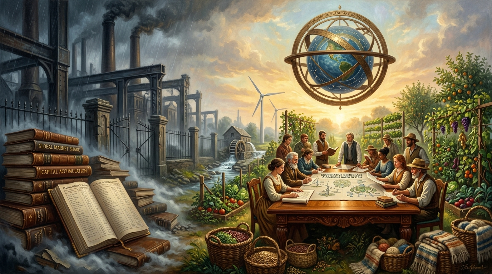

DECONSTRUCTING WORLD CAPITALISM.
From historical coercion and imperial accumulation to the architectural blueprint for a democratic, cooperative global commons.

“Economic systems are human creations, not natural laws. They can be redesigned. They can be replaced. They can be made to serve the whole rather than the few.” — Trevor Swistchew
Political Economy Dossier: Accumulation vs. Common Wealth
Structural Critique & The Architecture of Economic DemocracyHistorical Genesis: Coercion Disguised as Natural Law
Capitalism did not develop through peaceful barter or voluntary contracts. As documented by Karl Polanyi and Eric Williams, the system required state-enforced violence: the legislative dispossession of common lands in Britain to manufacture wage labour pools, and chattel slavery across the Atlantic to fuel early industrial capital. Modern neoliberal theory conceals this history by asserting that self-interest, endless growth, and structural inequality are inevitable natural axioms.
World capitalism did not emerge as a benign system of exchange: it was forged through centuries of conquest, enclosure, and coercion. From its earliest mercantile origins, the system relied on force to create the very conditions it required. The enclosure of common lands in England—described by Karl Polanyi in The Great Transformation—was not an organic evolution but a violent restructuring of society, one that transformed self-sufficient communities into wage-dependent labour pools.[1] The transatlantic slave trade, documented by Eric Williams in Capitalism and Slavery, was not an aberration but a foundational engine of capitalist accumulation.[2] These are historical facts, recorded by scholars who traced capitalism’s ascent through the suffering it imposed.
As capitalism matured, its theorists attempted to cloak this history in the language of natural law. Adam Smith’s The Wealth of Nations famously invoked the “invisible hand,” suggesting that markets, left to their own devices, would harmonise human affairs.[3] Yet Smith himself acknowledged that merchants often conspired against the public interest, a point later expanded by Joseph Stiglitz in The Price of Inequality, where he demonstrates that markets do not progress toward fairness but drift inevitably toward concentration of wealth and power.[4] The so-called “free market” was never free; it was constructed through legislation, policing, and imperial expansion. David Harvey’s analysis in A Brief History of Neoliberalism shows how state power has always been deployed to protect capital, not liberate people.[5]
Capitalist economic theory rests on flawed assumptions: that individuals act only in self-interest, that competition produces fairness, that growth can be infinite, that inequality is accidental rather than structural. These assumptions have been challenged repeatedly—from Amartya Sen’s work on human capability to Thomas Piketty’s demonstration in Capital in the Twenty-First Century that inequality is not a glitch but a built-in feature of capital accumulation.[6][7] The theory is not accurate. It sanctifies greed, justifies exploitation, and reduces human beings to units of labour whose worth is measured solely by productivity.
As capitalism globalised, its contradictions intensified. It created wealth by creating poverty. It generated abundance by generating waste. It promised freedom while delivering aggression in markets. It spoke of opportunity while enforcing hierarchy. It claimed to reward merit while entrenching inherited advantage. It insisted on efficiency while producing inequality with mechanical regularity. Naomi Klein’s The Shock Doctrine exposes how these are not unfortunate accidents but opportunities for the powerful to deepen their control.[8] The system is one-sided because it was designed to be one-sided: it funnels power upward, concentrates ownership, and leaves billions scrambling for survival while a tiny minority accumulates unimaginable influence.
Yet humanity is not condemned to this order. A humane global economic system does not require revolution, war, or the fantasy of tearing society down. It requires clarity, courage, and the willingness to teach that capitalism’s dominance is not destiny. Economic systems are human creations, not natural laws. They can be redesigned. They can be replaced. They can be made to serve the whole rather than the few.
A cooperative global economy begins by rejecting the competitive architecture that has defined the last five centuries. It discards the myth that nations must struggle against one another for advantage, that corporations must devour one another to survive, that individuals must fight for wages, status, and security. Cooperation becomes the principle of material life. Production is driven by collective purpose rather than profit. Workplaces become democratic engines of creativity, echoing the arguments of Elinor Ostrom, whose Nobel-winning research demonstrated that communities can govern shared resources more effectively than markets or states.[9] Ownership is dispersed, not concentrated. The worker becomes a co-author of the enterprise.
Global supply chains, currently led by exploitation, are rebuilt around shared governance, transparency, and ecological responsibility. Vandana Shiva’s work on global agriculture shows how cooperative stewardship can replace models that devastate people and planet.[10] The global South becomes an equal architect of the world’s future, not a reservoir of cheap labour and plundered minerals.
A humane system abandons the idea of infinite growth. It replaces GDP with measures of human well-being, environmental stability, and social cohesion—an approach advocated by Kate Raworth in Doughnut Economics.[11] It rewards care, creativity, and sustainability rather than extraction, destruction, and short-term gain. It recognises that the planet is finite and that any economic model ignoring this fact is doomed to collapse.
Democratic economic governance becomes the organising principle of global life. Those who labour also decide. Workplaces cease to be private kingdoms ruled by owners; they become democratic institutions where decisions are made collectively. This echoes the tradition of economic democracy in the works of G.D.H. Cole and later expanded by scholars such as Carole Pateman.[12] Power flows upward from the people rather than downward from elites. The economy becomes a continuous conversation in which every voice has weight.
Inequality is addressed directly. Wealth concentration is dismantled through shared ownership, public trusts, cooperative investment, and transparent redistribution. Reparative justice becomes a core principle, acknowledging centuries of extraction and correcting them through shared governance rather than charity.
International relations shift from competition to coordination. Nations collaborate on climate, technology, migration, and resource management through binding democratic institutions rather than coercive mechanisms of debt, sanctions, and military pressure.
The Fundamental Human Condition:
“Prosperity is collective, not individual; dignity cannot be traded on an exchange. It replaces the mythology of the isolated self with the reality of shared existence.”
— Trevor Swistchew • 2026
Most importantly, a humane global system restores the moral centre capitalism hollowed out. It recognises interdependence as the fundamental human condition. It teaches that prosperity is collective, not individual; that dignity cannot be traded on an exchange. It replaces the mythology of the isolated self with the reality of shared existence.
© 2026 Trevor Swistchew. All rights reserved.